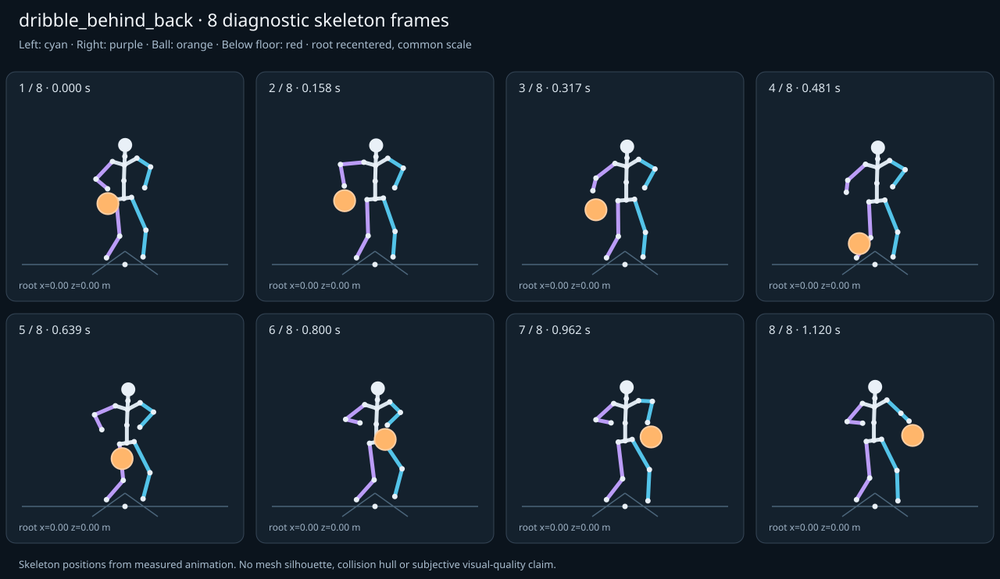

מה הוריד את הציון
- קפיצות פוזה: RightForeArm בזמן 0.1667 ש׳; קפיצת סיבוב שקולה 38.6042 מעלות ב־60Hz (אדום)
- כניסה ויציאה מול המתנה: פער ב־כניסה מול המתנה; יחס חריגה 2.493 (צהוב)
כיסוי: 100%. לא כל מדד חל על כל קליפ; הסטטוס והראיות מפורטים למטה.
שמונה פריימים
תצוגת שלד אבחונית שנבנתה מהפריימים הנמדדים. צד שמאל בכחול, ימין בסגול, כדור בכתום. מיקום השורש ממורכז לצפייה; מיקומו בעולם כתוב בכל פריים.

המדדים והראיות
| מדד | מצב | ערך | ציון | סף ופרטי מדידה |
|---|---|---|---|---|
| החלקת רגליים | ירוק | 0 height ratio | 100 | {
"definition": {
"label": "החלקת רגליים",
"unit": "height ratio",
"green": 0.01,
"yellow": 0.035,
"weight": 18,
"description": "Maximum horizontal sole displacement from the first sample of each declared support window, divided by character height. Inferred support is used only when no windows were supplied."
},
"value": 0.000003,
"status": "green",
"score": 99.99,
"evidence": {
"coordinateSpace": "authored reference world (simulation-owned)",
"supportSource": "declared",
"windows": 3,
"samples": 360,
"maxDriftMeters": 0.000005,
"p95SpeedMetersPerSecond": 0.000928,
"worst": {
"bone": "LeftFoot",
"t": 1.116667,
"start": 0.9744,
"end": 1.12,
"driftMeters": 0.000005
}
}
} |
| חדירה לרצפה | ירוק | 0 height ratio | 100 | {
"definition": {
"label": "חדירה לרצפה",
"unit": "height ratio",
"green": 0.005,
"yellow": 0.02,
"weight": 15,
"description": "Maximum depth of the supplied sole probe points and all skeletal joint centers below the declared floor plane, divided by height. Sole probes are not a mesh collision audit."
},
"value": 0.000001,
"status": "green",
"score": 100,
"evidence": {
"samples": 4140,
"floorY": 0,
"probeKind": "declared sole probes plus skeletal joint centers (no mesh surfaces)",
"maxDepthMeters": 0.000002,
"worst": {
"t": 1.116667,
"bone": "LeftFoot",
"depthMeters": 0.000002,
"y": -0.000002
}
}
} |
| קפיצות פוזה | אדום | 2.574 discontinuity ratio | 49 | {
"definition": {
"label": "קפיצות פוזה",
"unit": "discontinuity ratio",
"green": 1,
"yellow": 2.5,
"weight": 18,
"description": "Maximum adjacent 60 Hz-equivalent step: root-relative marker displacement / 0.04 height, root-relative rotation / 15 degrees, or root translation / 0.08 height. A fast continuous action can also exceed this screening threshold."
},
"value": 2.573611,
"status": "red",
"score": 49.26,
"evidence": {
"adjacentPairs": 206,
"observations": 3502,
"maxDegrees60Hz": 38.604166,
"maxMarkerStepHeight60Hz": 0.057222,
"maxRootStepHeight60Hz": 0,
"worst": {
"ratio": 2.573611039624555,
"t": 0.166667,
"previousTime": 0.165926,
"bone": "RightForeArm",
"markerStepHeight60Hz": 0.057219,
"degrees60Hz": 38.604166
}
}
} |
| חריגות אנטומיות | ירוק | 0 % affected frames | 100 | {
"definition": {
"label": "חריגות אנטומיות",
"unit": "% affected frames",
"green": 0.5,
"yellow": 3,
"weight": 14,
"description": "Percentage of frames with elbow or knee flexion above 165 degrees, neck bend above 80 degrees, or a segment length changing by more than 5%. Optional calibrated hinge checks detect reverse knee flexion above 8 degrees. Conservative marker limits do not diagnose axial joint twist."
},
"value": 0,
"status": "green",
"score": 100,
"evidence": {
"testedFrames": 207,
"affectedFrames": 0,
"checks": 3519,
"maxLimbFlexionDegrees": 120.869947,
"maxRelativeSegmentLengthChange": 0,
"hingeDirectionChecked": true,
"axialTwistChecked": false,
"violations": []
}
} |
| מגע בכדור | ירוק | 0 height ratio | 100 | {
"definition": {
"label": "מגע בכדור",
"unit": "height ratio",
"green": 0.015,
"yellow": 0.05,
"weight": 13,
"description": "Maximum absolute distance from the ball surface to the sampled, bone-transformed declared contact point, divided by height. Events are evaluated at their exact declared times by interpolation."
},
"value": 0.00029,
"status": "green",
"score": 99.61,
"evidence": {
"radiusMeters": 0.12,
"samples": 102,
"missed": [],
"contacts": [
{
"t": 0.966667,
"bone": "LeftHand",
"gapMeters": 0.00049,
"signedGapMeters": -0.00049,
"centerDistanceMeters": 0.11951,
"contactPoint": [
0.356398,
0.858577,
-0.01443
],
"ballCenter": [
0.356665,
0.739068,
-0.014408
],
"declaredLocalPoint": true
},
{
"t": 0.983333,
"bone": "LeftHand",
"gapMeters": 0.000457,
"signedGapMeters": -0.000457,
"centerDistanceMeters": 0.119543,
"contactPoint": [
0.354753,
0.870809,
0.030666
],
"ballCenter": [
0.354994,
0.751265,
0.030601
],
"declaredLocalPoint": true
},
{
"t": 0.95,
"bone": "LeftHand",
"gapMeters": 0.000387,
"signedGapMeters": -0.000387,
"centerDistanceMeters": 0.119613,
"contactPoint": [
0.356733,
0.846996,
-0.057984
],
"ballCenter": [
0.356883,
0.727383,
-0.057902
],
"declaredLocalPoint": true
},
{
"t": 1,
"bone": "LeftHand",
"gapMeters": 0.000349,
"signedGapMeters": -0.000349,
"centerDistanceMeters": 0.119651,
"contactPoint": [
0.35208,
0.883231,
0.075837
],
"ballCenter": [
0.352209,
0.76358,
0.075744
],
"declaredLocalPoint": true
},
{
"t": 1.016667,
"bone": "LeftHand",
"gapMeters": 0.000256,
"signedGapMeters": -0.000256,
"centerDistanceMeters": 0.119744,
"contactPoint": [
0.348615,
0.89536,
0.119711
],
"ballCenter": [
0.34865,
0.775616,
0.119639
],
"declaredLocalPoint": true
},
{
"t": 0.933333,
"bone": "LeftHand",
"gapMeters": 0.000254,
"signedGapMeters": -0.000254,
"centerDistanceMeters": 0.119746,
"contactPoint": [
0.355286,
0.836353,
-0.098577
],
"ballCenter": [
0.355307,
0.716607,
-0.098499
],
"declaredLocalPoint": true
},
{
"t": 1.033333,
"bone": "LeftHand",
"gapMeters": 0.00019,
"signedGapMeters": -0.00019,
"centerDistanceMeters": 0.11981,
"contactPoint": [
0.344674,
0.906789,
0.160945
],
"ballCenter": [
0.344657,
0.786979,
0.160905
],
"declaredLocalPoint": true
},
{
"t": 0.916667,
"bone": "LeftHand",
"gapMeters": 0.000163,
"signedGapMeters": -0.000163,
"centerDistanceMeters": 0.119837,
"contactPoint": [
0.351637,
0.826971,
-0.134876
],
"ballCenter": [
0.351599,
0.707133,
-0.134819
],
"declaredLocalPoint": true
},
{
"t": 0.15,
"bone": "RightHand",
"gapMeters": 0.000159,
"signedGapMeters": -0.000159,
"centerDistanceMeters": 0.119841,
"contactPoint": [
-0.355232,
0.852029,
-0.114472
],
"ballCenter": [
-0.355378,
0.749847,
-0.051856
],
"declaredLocalPoint": true
},
{
"t": 0.166667,
"bone": "RightHand",
"gapMeters": 0.000155,
"signedGapMeters": -0.000155,
"centerDistanceMeters": 0.119845,
"contactPoint": [
-0.353935,
0.845008,
-0.162097
],
"ballCenter": [
-0.354186,
0.742858,
-0.099423
],
"declaredLocalPoint": true
},
{
"t": 1.05,
"bone": "LeftHand",
"gapMeters": 0.000138,
"signedGapMeters": -0.000138,
"centerDistanceMeters": 0.119862,
"contactPoint": [
0.340607,
0.917134,
0.198178
],
"ballCenter": [
0.34057,
0.797272,
0.198161
],
"declaredLocalPoint": true
},
{
"t": 0.9,
"bone": "LeftHand",
"gapMeters": 0.000102,
"signedGapMeters": -0.000102,
"centerDistanceMeters": 0.119898,
"contactPoint": [
0.345465,
0.819257,
-0.165516
],
"ballCenter": [
0.345417,
0.699359,
-0.165479
],
"declaredLocalPoint": true
},
{
"t": 0.133333,
"bone": "RightHand",
"gapMeters": 0.000094,
"signedGapMeters": -0.000094,
"centerDistanceMeters": 0.119906,
"contactPoint": [
-0.354697,
0.85782,
-0.06514
],
"ballCenter": [
-0.354727,
0.755558,
-0.002531
],
"declaredLocalPoint": true
},
{
"t": 1.066667,
"bone": "LeftHand",
"gapMeters": 0.000092,
"signedGapMeters": -0.000092,
"centerDistanceMeters": 0.119908,
"contactPoint": [
0.336765,
0.926009,
0.230031
],
"ballCenter": [
0.33673,
0.806101,
0.230025
],
"declaredLocalPoint": true
},
{
"t": 0.883333,
"bone": "LeftHand",
"gapMeters": 0.000055,
"signedGapMeters": -0.000055,
"centerDistanceMeters": 0.119945,
"contactPoint": [
0.336453,
0.813623,
-0.189117
],
"ballCenter": [
0.336422,
0.693679,
-0.189099
],
"declaredLocalPoint": true
},
{
"t": 0.116667,
"bone": "RightHand",
"gapMeters": 0.000053,
"signedGapMeters": -0.000053,
"centerDistanceMeters": 0.119947,
"contactPoint": [
-0.352767,
0.862415,
-0.016861
],
"ballCenter": [
-0.352758,
0.760111,
0.045756
],
"declaredLocalPoint": true
},
{
"t": 0.183333,
"bone": "RightHand",
"gapMeters": 0.000052,
"signedGapMeters": -0.000052,
"centerDistanceMeters": 0.119948,
"contactPoint": [
-0.350611,
0.836735,
-0.205255
],
"ballCenter": [
-0.350697,
0.734462,
-0.142583
],
"declaredLocalPoint": true
},
{
"t": 1.083333,
"bone": "LeftHand",
"gapMeters": 0.000052,
"signedGapMeters": -0.000052,
"centerDistanceMeters": 0.119948,
"contactPoint": [
0.333497,
0.933019,
0.255118
],
"ballCenter": [
0.333474,
0.813071,
0.255117
],
"declaredLocalPoint": true
},
{
"t": 0.1,
"bone": "RightHand",
"gapMeters": 0.00003,
"signedGapMeters": -0.00003,
"centerDistanceMeters": 0.11997,
"contactPoint": [
-0.350037,
0.865953,
0.027679
],
"ballCenter": [
-0.35002,
0.763624,
0.090302
],
"declaredLocalPoint": true
},
{
"t": 0.2,
"bone": "RightHand",
"gapMeters": 0.000023,
"signedGapMeters": -0.000023,
"centerDistanceMeters": 0.119977,
"contactPoint": [
-0.344585,
0.826851,
-0.241711
],
"ballCenter": [
-0.344575,
0.724523,
-0.179074
],
"declaredLocalPoint": true
}
],
"contactDetailsTruncated": true,
"coordinateSpace": "authored reference world (simulation-owned)"
}
} |
| כניסה ויציאה מול המתנה | צהוב | 2.493 continuity ratio | 58 | {
"definition": {
"label": "כניסה ויציאה מול המתנה",
"unit": "continuity ratio",
"green": 1,
"yellow": 3,
"weight": 10,
"description": "Worst entry/exit mismatch to the best matching idle phase: RMS marker error / 0.04 height, RMS bone rotation / 25 degrees, or RMS endpoint velocity error / 0.75 height per second. Horizontal root translation is aligned; root height and body pose remain measurable."
},
"value": 2.492966,
"status": "yellow",
"score": 57.61,
"evidence": {
"entry": {
"ratio": 2.492966326268719,
"t": 0,
"idleTime": 0.058113,
"markers": 17,
"rmsPositionHeight": 0.073423,
"rmsRotationDegrees": 62.324158,
"rmsVelocityHeightPerSecond": 0.181755,
"velocityEvaluated": true
},
"exit": {
"ratio": 1.3124481338995568,
"t": 1.12,
"idleTime": 0.863396,
"markers": 17,
"rmsPositionHeight": 0.038616,
"rmsRotationDegrees": 32.811203,
"rmsVelocityHeightPerSecond": 0.126635,
"velocityEvaluated": true
},
"worstEndpoint": "entry",
"alignment": "horizontal root translation; raw asset poses used when provided"
}
} |
| מהירות גוף מול צעדים | לא חל | — relative speed error | — | {
"definition": {
"label": "מהירות גוף מול צעדים",
"unit": "relative speed error",
"green": 0.2,
"yellow": 0.5,
"weight": 8,
"description": "Relative difference between average root travel speed and the median backward support-foot sweep speed relative to the root. Cadence and implied stride lengths are also reported. In-place clips need an explicit reference travel scenario; stationary actions are not scored as locomotion."
},
"value": null,
"status": "not-applicable",
"score": null,
"reason": "This action is not declared locomotion.",
"evidence": {}
} |
| סימטריה | ירוק | 0 relative mismatch | 100 | {
"definition": {
"label": "סימטריה",
"unit": "relative mismatch",
"green": 0.03,
"yellow": 0.1,
"weight": 4,
"description": "Maximum bilateral segment-length mismatch. Looping locomotion additionally compares reflected half-cycle leg markers; explicit pose symmetry compares simultaneous bilateral markers. One-sided actions retain unscored motion diagnostics, so a valid kick or dribble arm is not penalized for intentional asymmetry."
},
"value": 0,
"status": "green",
"score": 100,
"evidence": {
"mode": "structural",
"modeSource": "structural default for intentional asymmetry",
"structuralMismatch": 0,
"segments": [
{
"segment": "Arm-ForeArm",
"mismatch": 0
},
{
"segment": "ForeArm-Hand",
"mismatch": 0
},
{
"segment": "UpLeg-Leg",
"mismatch": 0
},
{
"segment": "Leg-Foot",
"mismatch": 0
}
],
"motionRmsHeight": null,
"worstMotion": null,
"bilateralPoseRmsHeightUnscored": 0.083922,
"note": "One-sided authored actions are checked for structural symmetry only."
}
} |